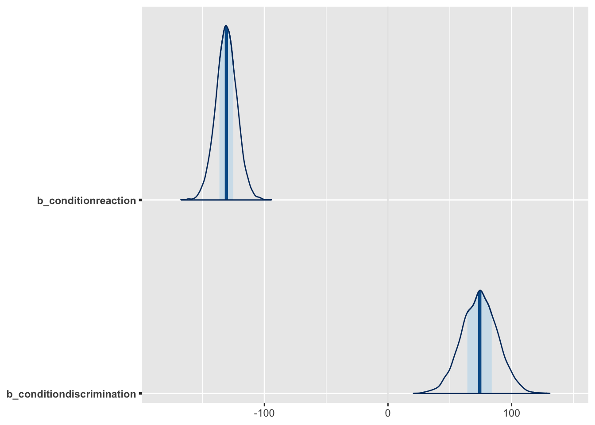
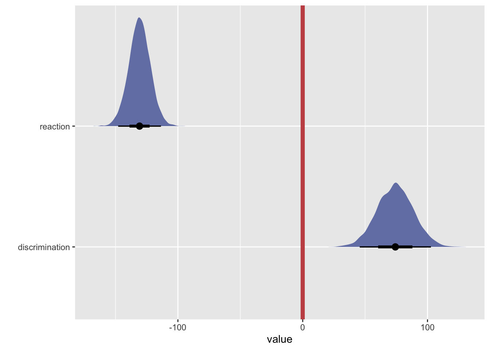
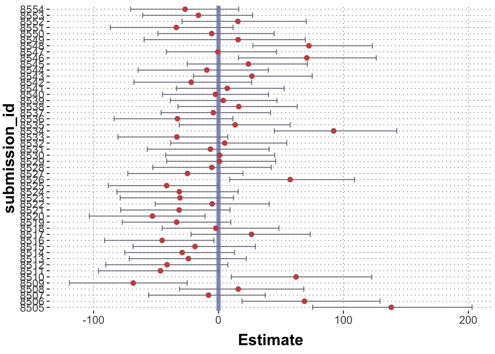

This document provides a cursory run-down of common operations and manipulations for working with the brms package.
Preamble
Here is code to load (and if necessary, install) required packages, and to set some global options (for plotting and efficient fitting of Bayesian models).
Toggle code
# install packages from CRAN (unless installed)pckgs_needed <-c("tidyverse","brms","rstan","rstanarm","remotes","tidybayes","bridgesampling","shinystan","mgcv")pckgs_installed <-installed.packages()[,"Package"]pckgs_2_install <- pckgs_needed[!(pckgs_needed %in% pckgs_installed)]if(length(pckgs_2_install)) {install.packages(pckgs_2_install)} # install additional packages from GitHub (unless installed)if (!"aida"%in% pckgs_installed) { remotes::install_github("michael-franke/aida-package")}if (!"faintr"%in% pckgs_installed) { remotes::install_github("michael-franke/faintr")}if (!"cspplot"%in% pckgs_installed) { remotes::install_github("CogSciPrag/cspplot")}# load the required packagesx <-lapply(pckgs_needed, library, character.only =TRUE)library(aida)library(faintr)library(cspplot)# these options help Stan run fasteroptions(mc.cores = parallel::detectCores())# use the CSP-theme for plottingtheme_set(theme_csp())# global color scheme from CSPproject_colors = cspplot::list_colors() |>pull(hex)# names(project_colors) <- cspplot::list_colors() |> pull(name)# setting theme colors globallyscale_colour_discrete <-function(...) {scale_colour_manual(..., values = project_colors)}scale_fill_discrete <-function(...) {scale_fill_manual(..., values = project_colors)}
Running a regression model
As a running example, we fit a multi-level model.
Toggle code
data_MC <- aida::data_MC_preprocessed |>mutate(condition =factor(as.character(block), levels =c("goNoGo", "reaction", "discrimination")))fit_MC <- brms::brm(# "brmsformula" object specifies the model to fitformula = RT ~ condition + (1+ condition + shape | submission_id),# data to fit model todata = data_MC,# "iter" is the number of iterationsiter =4000,# control parameters for MCMCcontrol =list(adapt_delta =0.9) )
Updating a model
Using stats::update(), refit a model based on an existing model fit, keeping everything as is, except for what is explicitly set:
Toggle code
# take existing fit, refit on smaller data set, just take 100 samples (all else equal)fit_first_five <- stats::update(object = fit_MC,iter =100,# use first five participants onlynewdata = data_MC |>filter(submission_id >=8550) )
Formula syntax
The basic form of a brms formula is: response ~ pterms + (gterms | group)
Multi-level modeling
(gterms || group) : suppress correlation between gterms
# A tibble: 3 × 4
name `|95%` mean `95%|`
<chr> <dbl> <dbl> <dbl>
1 b_Intercept 425. 442. 460.
2 b_conditiondiscrimination 45.2 74.1 102.
3 b_conditionreaction -147. -131. -113.
Plotting posteriors
fill me
population and group level effects
Posterior predictives
Visual PPCs
Use tools from the bayesplot package. The basic bayesplot::pp_check() plots the distribution of ndraws samples from the posterior (data) predictive against the distribution of the data the model was trained on:
Toggle code
bayesplot::pp_check(fit_MC, ndraws =30)

There are many tweaks to pp_check:
Toggle code
bayesplot::pp_check(fit_MC, ndraws =30, type ="hist")

You can also directly use underlying functions like ppc_stat. See help("PPC-overview") and help("PPD-overview") for what is available.
bayesplot::ppc_stat(y = data_MC$RT, yrep = predictive_samples,# specify the test statistic of intereststat =function(x){quantile(x, 0.8)})

Extracting samples from the posterior predictive distribution
There are three kinds of commonly relevant variables a generalized linear model predicts:
the central tendency of data \(y\) for some predictor \(x\),
the shape of the (hypothetical) data \(y'\) for \(x\), and
a linear predictor value given values of \(x\).
All of these measures can be obtained from a fitted model with different functions, e.g., from the tidyverse package. Here, it does not matter whether the model was fitted to data or it is a “prior model”, so to speak, fit with the flag sample_prior = "only".
Here is an example for a logistic regression model (where all the three measures clearly show their conceptual difference).
# 2 samples from the predicted central tendencyaida::data_MT |> dplyr::select(group, condition) |>unique() |> tidybayes::add_epred_draws( fit_MT_logistic,ndraws =2 )
# A tibble: 8 × 7
# Groups: group, condition, .row [4]
group condition .row .chain .iteration .draw .epred
<chr> <chr> <int> <int> <int> <int> <dbl>
1 touch Atypical 1 NA NA 1 0.908
2 touch Atypical 1 NA NA 2 0.891
3 touch Typical 2 NA NA 1 0.948
4 touch Typical 2 NA NA 2 0.938
5 click Atypical 3 NA NA 1 0.894
6 click Atypical 3 NA NA 2 0.840
7 click Typical 4 NA NA 1 0.954
8 click Typical 4 NA NA 2 0.965
Toggle code
# 2 samples from the predictive distribution (data samples)aida::data_MT |> dplyr::select(group, condition) |>unique() |> tidybayes::add_predicted_draws( fit_MT_logistic,ndraws =2 )
# A tibble: 8 × 7
# Groups: group, condition, .row [4]
group condition .row .chain .iteration .draw .prediction
<chr> <chr> <int> <int> <int> <int> <int>
1 touch Atypical 1 NA NA 1 1
2 touch Atypical 1 NA NA 2 1
3 touch Typical 2 NA NA 1 1
4 touch Typical 2 NA NA 2 1
5 click Atypical 3 NA NA 1 1
6 click Atypical 3 NA NA 2 1
7 click Typical 4 NA NA 1 1
8 click Typical 4 NA NA 2 1
Toggle code
# 2 samples for the linear predictoraida::data_MT |> dplyr::select(group, condition) |>unique() |> tidybayes::add_linpred_draws( fit_MT_logistic,ndraws =2 )
# A tibble: 8 × 7
# Groups: group, condition, .row [4]
group condition .row .chain .iteration .draw .linpred
<chr> <chr> <int> <int> <int> <int> <dbl>
1 touch Atypical 1 NA NA 1 2.83
2 touch Atypical 1 NA NA 2 2.60
3 touch Typical 2 NA NA 1 2.97
4 touch Typical 2 NA NA 2 2.78
5 click Atypical 3 NA NA 1 2.07
6 click Atypical 3 NA NA 2 2.22
7 click Typical 4 NA NA 1 3.25
8 click Typical 4 NA NA 2 3.26
Priors
Inspecting default priors without running the model
Toggle code
# define the model as a "brmsformula" objectmyFormula <- brms::bf(RT ~1+ condition + (1+ condition | submission_id))# get prior informationbrms::get_prior(formula = myFormula,data = data_MC,family =exgaussian() )